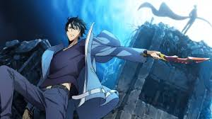

Characters



watch solo leveling
Solo Leveling, also alternatively translated as Only I Level Up (Korean: 나 혼자만 레벨업; RR: Na Honjaman Rebeleop), is a South Korean web novel written by Chugong. It was serialized in Kakao's digital comic and fiction platform KakaoPage beginning on July 25, 2016, and was later published in by D&C Media under their Papyrus label since November 4, 2016. The novel has been licensed in English by Yen Press.[1]